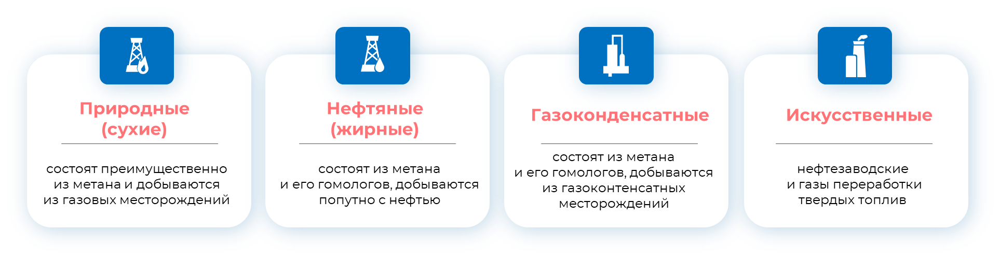
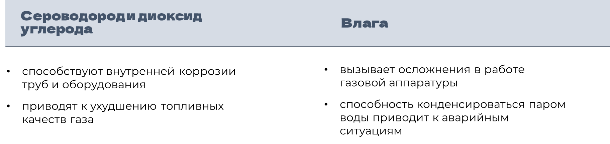

Подготовка газов к переработке
Горючими называются газы, которые состоят из смеси сероводорода, водорода, окиси углерода, разбавленных негорючими, такими как азот, гелий, углерод, аргон, диоксид углерода, аргон, и водяной пар.
Классификация горючих газов по происхождению

В добытом газе содержатся различные примеси, которые могут оказывать негативное действие:

Поэтому при подготовке горючих газов к переработке используются такие процессы, как очистка и осушка газа.